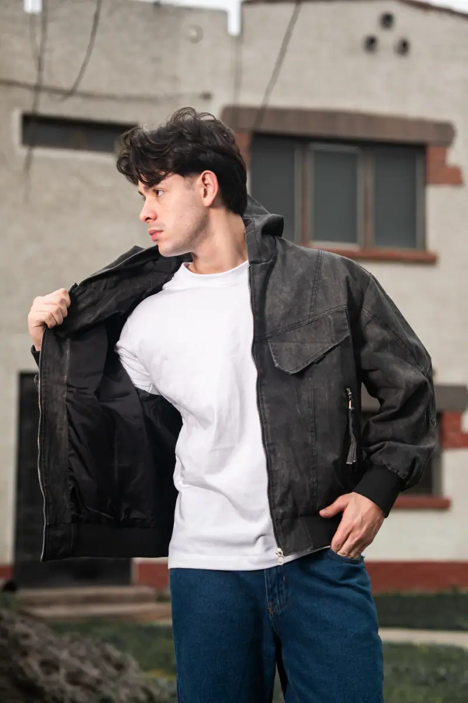

Dos mundos · Una sola esencia
Una misma persona puede ser ambos, sin problemas en su día a día.

El lado urbano, cómodo y expresivo. Ropa para el día a día, con actitud.
El lado refinado y estructurado. Cortes precisos y una construcción impecable.